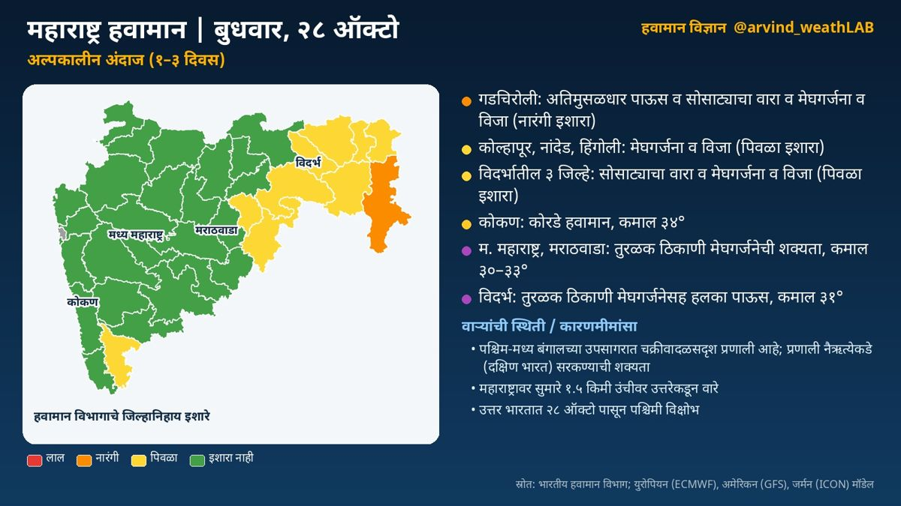
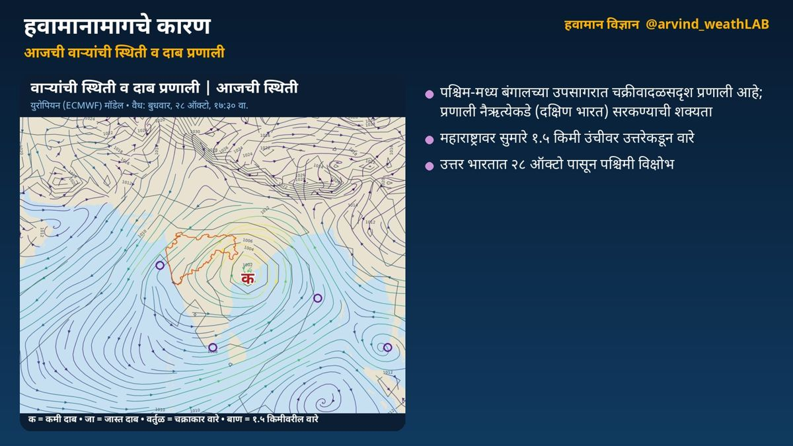
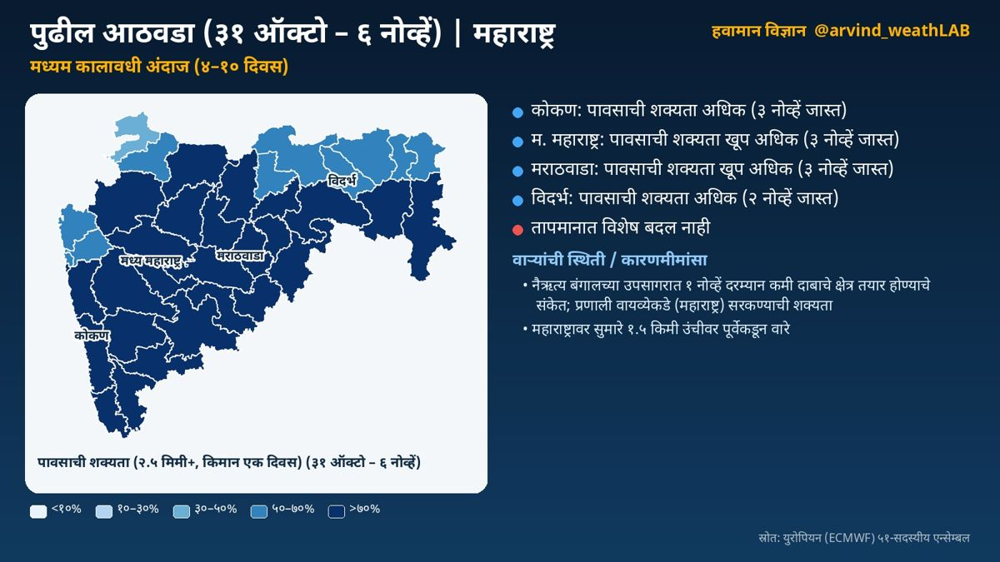
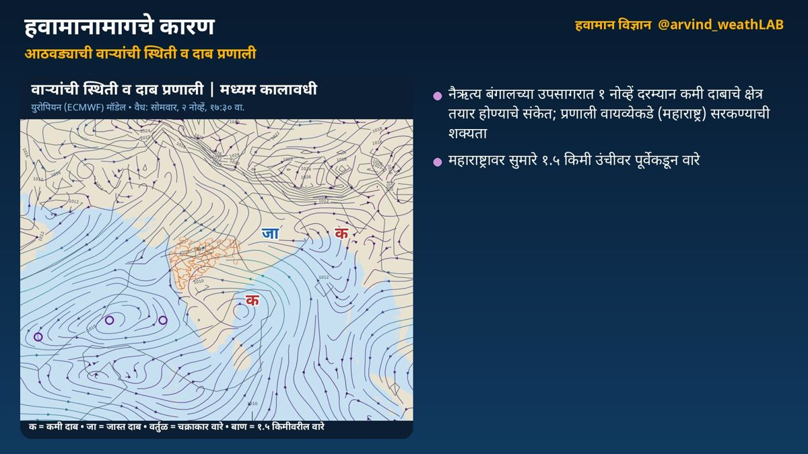
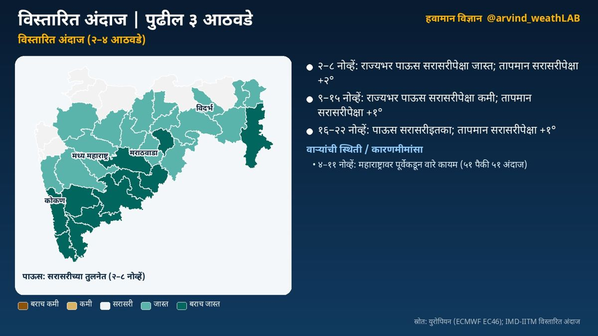
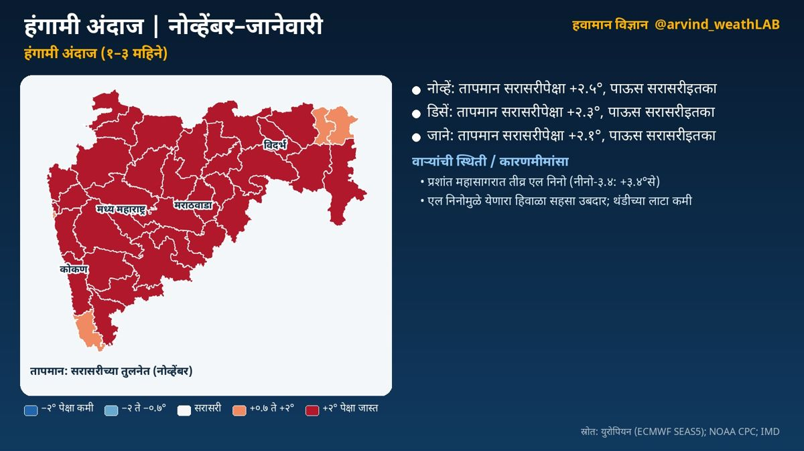

Today's visual analysisआजचे दृश्य विश्लेषण






This page is written in Marathi.
अल्पकालीन विश्लेषण (१ ते ३ दिवस) · वैयक्तिक विश्लेषणावर आधारित
🟠 गडचिरोली: अतिमुसळधार पाऊस व सोसाट्याचा वारा व मेघगर्जना व विजा
🟡 कोल्हापूर, नांदेड, हिंगोली: मेघगर्जना व विजा
🟡 विदर्भातील ३ जिल्हे: सोसाट्याचा वारा व मेघगर्जना व विजा
🌀 पश्चिम-मध्य बंगालच्या उपसागरात चक्रीवादळसदृश प्रणाली आहे
हवामानामागचे कारण
🌀 वाऱ्यांची स्थिती व कारणमीमांसा:
• पश्चिम-मध्य बंगालच्या उपसागरात चक्रीवादळसदृश प्रणाली आहे; प्रणाली नैऋत्येकडे (दक्षिण भारत) सरकण्याची शक्यता. या प्रणालीमुळे राज्यात ढगाळ हवामान व पावसाची शक्यता वाढू शकते
• महाराष्ट्रावर २९ ऑक्टो दरम्यान कमी दाबाचे क्षेत्र तयार होण्याचे संकेत; प्रणाली उत्तरेकडे (मध्य भारत) सरकण्याची शक्यता
• पूर्व-मध्य अरबी समुद्रात कमी दाबाचे क्षेत्र आहे
• महाराष्ट्रावर सुमारे १.५ किमी उंचीवर उत्तरेकडून वारे
• उत्तर भारतात २८ ऑक्टो पासून पश्चिमी विक्षोभ; तो पुढे सरकल्यानंतर उत्तरेकडील थंड वाऱ्यांमुळे राज्यात किमान तापमानात घट होऊ शकते
🏙️ आज शहरांचे कमाल/किमान तापमान (हवामान विभाग):
मुंबई ३५/२५, रत्नागिरी ३५/२४, पुणे ३४/१५, नाशिक ३४/१८, कोल्हापूर ३३/२१, छ. ३४/२०, नागपूर ३०/१९
📌 निरीक्षणे:
🌡️ काल सर्वाधिक: रत्नागिरी ३७.२°
❄️ नीचांकी: नाशिक १४.३°
🛰️ उपग्रह: मराठवाडा, विदर्भ भागावर उंच गडगडाटी ढग (कोकण १%, मध्य महाराष्ट्र १०%, मराठवाडा ४७%, विदर्भ ८०% ढगाच्छादन)
ℹ️ स्रोत: भारतीय हवामान विभाग; युरोपियन (ECMWF), अमेरिकन (GFS), जर्मन (ICON) मॉडेल
⚠️ हे मॉडेल-आधारित विश्लेषण आहे. अधिकृत इशाऱ्यांसाठी भारतीय हवामान विभाग (IMD) व स्थानिक प्रशासनाच्या सूचना पाहा.
सविस्तर हवामान विश्लेषण
अल्पकालीन विश्लेषण (१ ते ३ दिवस)
नमस्कार! आज बुधवार, २८ ऑक्टोबर. पाहूया महाराष्ट्राचे हवामान विश्लेषण. भारतीय हवामान विभागाने गडचिरोली जिल्ह्यांसाठी अतिमुसळधार पाऊस व सोसाट्याचा वारा व मेघगर्जना व विजा संदर्भात नारंगी इशारा दिला आहे. भारतीय हवामान विभागाने कोल्हापूर, नांदेड, हिंगोली जिल्ह्यांसाठी मेघगर्जना व विजा संदर्भात पिवळा इशारा दिला आहे. भारतीय हवामान विभागाने यवतमाळ, नागपूर, वर्धा जिल्ह्यांसाठी सोसाट्याचा वारा व मेघगर्जना व विजा संदर्भात पिवळा इशारा दिला आहे. कोकण: कोरडे हवामान. कमाल तापमान सुमारे ३४ आणि किमान १९ अंश सेल्सिअस. मध्य महाराष्ट्र: तुरळक ठिकाणी मेघगर्जनेची शक्यता. कमाल तापमान सुमारे ३३ आणि किमान १८ अंश सेल्सिअस. मराठवाडा: तुरळक ठिकाणी मेघगर्जनेची शक्यता. कमाल तापमान सुमारे ३० आणि किमान २० अंश सेल्सिअस. विदर्भ: तुरळक ठिकाणी मेघगर्जनेसह हलका पाऊस. कमाल तापमान सुमारे ३१ आणि किमान २२ अंश सेल्सिअस. काल राज्यातील सर्वाधिक तापमान रत्नागिरी येथे ३७.२ अंश (सरासरीपेक्षा ३.८° जास्त) नोंदले गेले. आता पाहूया हवामानामागचे कारण, म्हणजेच वाऱ्यांची स्थिती. पश्चिम-मध्य बंगालच्या उपसागरात चक्रीवादळसदृश प्रणाली आहे; प्रणाली नैऋत्येकडे (दक्षिण भारत) सरकण्याची शक्यता. या प्रणालीमुळे राज्यात ढगाळ हवामान व पावसाची शक्यता वाढू शकते. महाराष्ट्रावर २९ ऑक्टो दरम्यान कमी दाबाचे क्षेत्र तयार होण्याचे संकेत; प्रणाली उत्तरेकडे (मध्य भारत) सरकण्याची शक्यता. पूर्व-मध्य अरबी समुद्रात कमी दाबाचे क्षेत्र आहे. महाराष्ट्रावर सुमारे १.५ किमी उंचीवर उत्तरेकडून वारे. उत्तर भारतात २८ ऑक्टो पासून पश्चिमी विक्षोभ; तो पुढे सरकल्यानंतर उत्तरेकडील थंड वाऱ्यांमुळे राज्यात किमान तापमानात घट होऊ शकते.
मध्यम कालावधी विश्लेषण (४ ते १० दिवस)
आता पुढील आठवड्याचा, म्हणजे ३१ ऑक्टो, ६ नोव्हें या काळाचे विश्लेषण. युरोपियन हवामान केंद्राच्या ५१ वेगवेगळ्या संभाव्य मॉडेल-परिणामांवर आधारित. कोकण: पावसाची शक्यता अधिक (३ नोव्हें जास्त). मध्य महाराष्ट्र: पावसाची शक्यता खूप अधिक (३ नोव्हें जास्त). मराठवाडा: पावसाची शक्यता खूप अधिक (३ नोव्हें जास्त). विदर्भ: पावसाची शक्यता अधिक (२ नोव्हें जास्त). तापमानात विशेष बदल नाही. या काळातील वाऱ्यांची स्थिती: नैऋत्य बंगालच्या उपसागरात १ नोव्हें दरम्यान कमी दाबाचे क्षेत्र तयार होण्याचे संकेत; प्रणाली वायव्येकडे (महाराष्ट्र) सरकण्याची शक्यता. या प्रणालीमुळे राज्यात ढगाळ हवामान व पावसाची शक्यता वाढू शकते. ईशान्य अरबी समुद्रात १ नोव्हें दरम्यान कमी दाबाचे क्षेत्र तयार होण्याचे संकेत. ईशान्य भारतावर २ नोव्हें दरम्यान कमी दाबाचे क्षेत्र तयार होण्याचे संकेत. महाराष्ट्रावर सुमारे १.५ किमी उंचीवर पूर्वेकडून वारे.
विस्तारित विश्लेषण (२ ते ४ आठवडे)
आता पुढील तीन आठवड्यांचा विस्तारित विश्लेषण. आठवडा १, २ ते ८ नोव्हें: राज्यभर पाऊस सरासरीपेक्षा जास्त. तापमान सरासरीपेक्षा १.६ अंश जास्त राहण्याची शक्यता. आठवडा २, ९ ते १५ नोव्हें: राज्यभर पाऊस सरासरीपेक्षा कमी. तापमान सरासरीपेक्षा १.० अंश जास्त राहण्याची शक्यता. आठवडा ३, १६ ते २२ नोव्हें: पाऊस सरासरीइतका. तापमान सरासरीपेक्षा १.१ अंश जास्त राहण्याची शक्यता. वाऱ्यांचा प्रवाह: ४ ते ११ नोव्हें: महाराष्ट्रावर पूर्वेकडून वारे कायम (५१ पैकी ५१ सदस्य); पूर्व/ईशान्येकडील वारे सहसा कोरडे हवामान आणतात. भारतीय हवामान विभाग व आयआयटीएम पुणे यांचे विस्तारित कालावधी नकाशेही हेच संकेत तपासण्यासाठी पाहा.
हंगामी विश्लेषण (१ ते ३ महिने)
आता नोव्हेंबर ते जानेवारी या हंगामाचा दीर्घकालीन विश्लेषण. नोव्हेंबर: तापमान सरासरीपेक्षा बरेच जास्त, सुमारे +२.५ अंश; पाऊस सरासरीइतका. डिसेंबर: तापमान सरासरीपेक्षा बरेच जास्त, सुमारे +२.३ अंश; पाऊस सरासरीइतका. जानेवारी: तापमान सरासरीपेक्षा बरेच जास्त, सुमारे +२.१ अंश; पाऊस सरासरीइतका. प्रशांत महासागरात तीव्र एल निनो (नीनो-३.४: +३.४°से); तो अजून बळकट होत आहे. एल निनोमुळे येणारा हिवाळा सहसा उबदार; थंडीच्या लाटा कमी.
हे मॉडेल-आधारित विश्लेषण आहे. अधिकृत इशाऱ्यांसाठी भारतीय हवामान विभाग (IMD) व स्थानिक प्रशासनाच्या सूचना पाहा.
दैनंदिन अपडेटसाठी X वर फॉलो करा: @arvind_weathLAB
This alert gives information only. It comes from my own analysis. For official weather forecasts and warnings, see the India Meteorological Department website mausam.imd.gov.in or the 'Mausam' and 'Damini' apps.हा इशारा माझ्या वैयक्तिक विश्लेषणावर आधारित माहितीपर मजकूर आहे. अधिकृत हवामान अंदाज व इशाऱ्यांसाठी कृपया भारतीय हवामान विभागाचे संकेतस्थळ mausam.imd.gov.in किंवा 'मौसम' / 'दामिनी' ॲप पाहा.